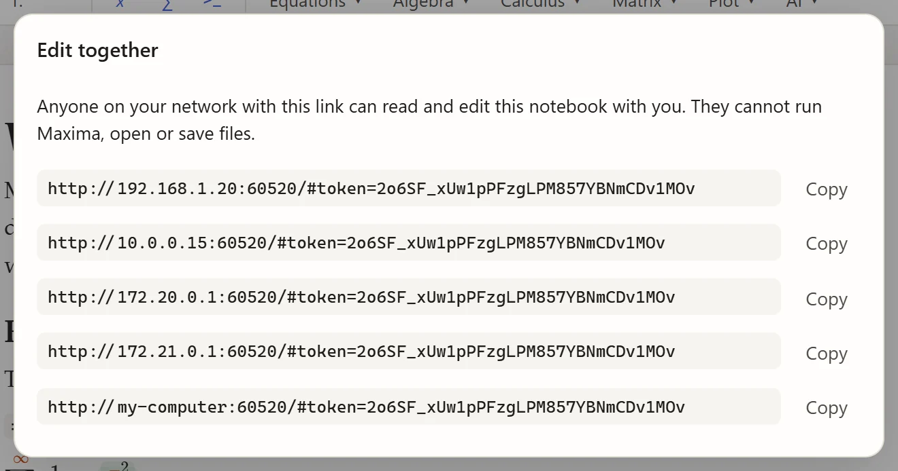
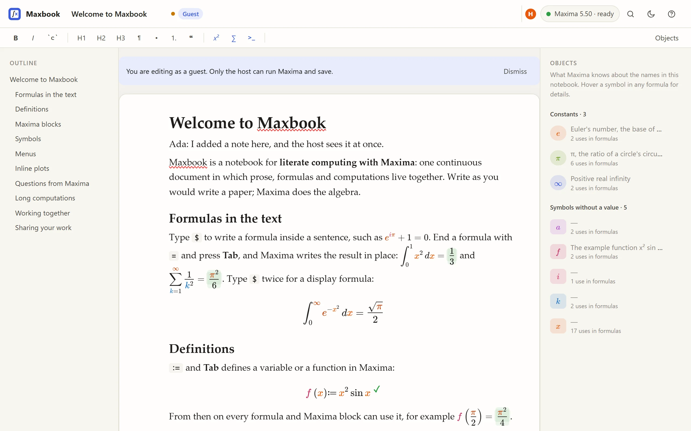
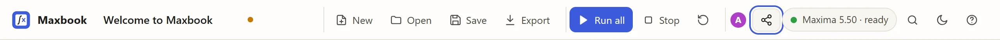

Editing together
Several windows on one computer
Every window that shows Maxbook’s address edits the same notebook: type in one and the others follow immediately. Use it to keep a notebook open on two screens, or to look at the beginning while you work at the end. A new window joins the notebook that is already open; New or Open in any window changes the notebook for all of them.
With others on your network
Start Maxbook with --share:
maxbook --share lecture.maxbookMaxbook then also listens on your local network and prints links that others can open. Click the share button in the toolbar to see and copy them:

There is one link per network address of your computer; give your colleagues the one for the network you share (usually the one starting with 192.168. or 10.).
Someone who opens the link edits the same notebook as a guest:

Guests see who else is there (the round initials at the top right), and you see them:

What guests can do
| You (host) | Guest | |
|---|---|---|
Read and edit the notebook |
yes |
yes |
See results, plots and the Objects panel |
yes |
yes |
Run Maxima, Run all, Stop, Restart |
yes |
no |
Open, save and export files |
yes |
no |
Use the AI helper |
yes |
no |
Only you can run Maxima because a Maxima session can run programs and read files on your computer; a guest could otherwise use it to reach your files. When you run something, guests see the results appear.
Good to know
-
Sharing works on a local network, without any server on the internet. The connection is plain HTTP: share links only with people you trust, on a network you trust (not public Wi-Fi).
-
The link contains a random key; anyone with the link can edit until you quit Maxbook. Every start creates a new key.
-
Your firewall may ask whether to allow Maxbook (or Python) on the network; allow it for private networks.
-
The shared notebook lives in your running Maxbook: save it to keep it.
-
Without
--share, Maxbook only listens on127.0.0.1and nobody else can connect.